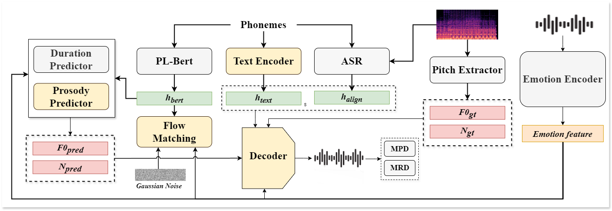

EF-TTS:
High-fidelity Text-to-Speech through Conditional Flow Matching and Prosody Modeling with Large Speech Language Models
Haoyu Wang, Jiale Chen, Jiaxun Li, Sizhe Shan, Yuehai Wang
Department of Information and Electronic Engineering, Zhejiang University, China
Submitted to APSIPA 2025
Abstract.
Text-to-speech (TTS) technology has made significant advancements.
However, generating high-quality, controllable emotional speech remains challenging due to the complex nature of emotions and speaker variability.
In this paper, we propose EFTTS, a controllable, zero-shot emotional TTS model.
EFTTS extracts emotional features using a self-supervised emotion representation model and utilizes conditional flow matching to model emotion features with text inputs.
This approach allows for precise emotional control and decouples emotion from other paralinguistic features.
Additionally, we introduce zero-shot emotion transfer to generate emotionally appropriate speech that is closely aligned with the input text and reference speech.
Experimental results show that EFTTS outperforms existing methods in terms of emotional expressiveness, naturalness, and synthesis quality,
offering a promising solution for high-quality, controllable emotional speech synthesis.
Overview

Figure 1: Training diagram of our model. The pitch extractor, PL-bert, and ASR modules are frozen during training. The emotion encoder extracts the utterance-level features of speech.

Figure 2: Inference diagram of the EFTTS.
Comparison with other TTS models
| Emotion | EmoDiff | EmoSphere | Ours |
|---|---|---|---|
| Angry | |||
| Happy | |||
| Sad | |||
| Surprise | |||
Controllable Emotional Speech Synthesis
| Text | Ground Truth | Synthesized | Emotion |
|---|---|---|---|
| Poor Tom now is dead! | Neutral | ||
| Then sadly it is much farther. | Angry | ||
| Then there was a report. | Happy | ||
| Andy what's the gyre and to gimble. | Sad | ||
| But what about this thing, sticky! | Surprise |
Zero-shot Emotion Transfer
| Text | Ground Truth | Synthesized | Emotion | Referance Audio |
|---|---|---|---|---|
| I can't believe you did that! | Angry | |||
| That's completely unacceptable! | ||||
| Get out of my way right now! | ||||
| I'm so excited about the party! | Happy | |||
| We won the championship! | ||||
| That's wonderful news! | ||||
| The meeting will start at two o'clock. | Neutral | |||
| The train arrives at platform three. | ||||
| Please fill out the form completely. | ||||
| I miss her so much since she's gone. | Sad | |||
| We lost everything in the fire. | ||||
| I'm sorry, but he didn't make it. | ||||
| What? I can't believe it! | Surprise | |||
| Oh my goodness! Is that really you? | ||||
| Wow! That was unexpected! | ||||